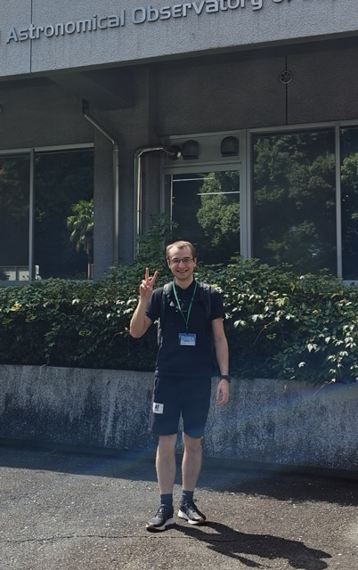

Nicholas Storm
PhD Student in Astrophysics · MPIA Heidelberg
I’m an astrophysicist specialising in stellar spectroscopy. My research focuses on NLTE modelling of neutron‑capture element abundances and their implications for Galactic chemical evolution. Lately I’ve also been working on iron‑peak elements, GCE modelling, Payne neural networks, and the 4MOST spectroscopic survey. In 4MOST, I’m a member of the S4 survey, IWG3 and IWG7 working groups. I’m co‑developer of the open‑source NLTE spectral‑fitting code TSFitPy. My Github profile is here. It includes some other projects, such as Payne neural network training code. Also recently, I've published my Payne network for spectral synthesis here and for fitting here.
Selected Publications (First Author)
- Storm N. et al. (subm ApJ, 2025) — Observational constraints on the origin of the elements. X. Combining NLTE and machine learning for chemical diagnostics of 4 million stars in the 4MIDABLE-HR survey
- Storm N. et al. (2025) — Observational constraints on the origin of the elements. IX. 3D NLTE abundances of metals in the context of Galactic Chemical Evolution models and 4MOST
- Storm N. et al. (2024) — 3D NLTE modelling of Y and Eu. Centre-to-limb variation and solar abundances
- Storm N., Bergemann M. (2023) — Observational constraints on the origin of the elements - VII. NLTE analysis of Y II lines in spectra of cool stars and implications for Y as a Galactic chemical clock
Conferences & Talks
- Nov 2025 — Invited lecture and talk, Daejeon, South Korea — Undergraduate lecture: how we model the stars that we see & Talk: Galactic chemical evolution in the era of 3D NLTE
- Nov 2025 — Origin of Elements & Cosmic Evolution 2025, Beijing, China — Talk: Galactic chemical evolution in 3D NLTE
- Jun 2025 — EAS, Cork, Ireland — Talk: 3D NLTE abundance of metals within GCE and 4MOST context
- Jun 2025 — Nuclei in the Cosmos XVIII, Girona, Spain — Talk: 3D NLTE abundance of iron‑peak and neutron‑capture elements within GCE context
- Sep 2024 — Astrophysical Origins of Carbon workshop, Tokyo, Japan — Talk: Impact of massive binary‑stripped stars on Galactic chemical enrichment of C (+ Ni & Eu) and constraints from observed NLTE abundance ratios
- Jun 2024 — 4MOST S4 in‑person meeting, Heidelberg, Germany — Talks: Z‑complete disc survey & IWG7 overview
- Apr 2024 — EOS meeting, Brussels, Belgium — Talk: The Impact of 3D NLTE Radiative Transfer on s‑ and r‑process chemical abundances in Galactic stars
- Mar 2024 — RT24 Workshop on Radiative Transfer Codes, Heidelberg, Germany — Talk: Applications of 3D NLTE radiative transfer to stellar chemical abundance diagnostics
- Nov 2023 — Astro3D retreat, Tangalooma, Australia — Attendee
- Sep 2023 — Nuclei in the Cosmos XVII, Daejeon, South Korea — Talk: The Impact of 1D and 3D NLTE Effects on neutron‑capture elements
- Aug 2023 — MIAPbP, Munich, Germany — Talk: NLTE analysis of neutron‑capture elements
- May 2023 — Stellar Properties from NLTE Radiative Transfer, Chicago, USA — Talk: NLTE analysis of neutron‑capture elements
- Jan 2023 — Stellar Ages and Galactic Archaeology, Sexten, Italy — Talk: NLTE analysis of [Y/Mg] and their relation to stellar age
Interests
I’m passionate about stellar spectroscopy, especially 1D NLTE and 3D NLTE modelling. My research focuses on the abundance of neutron‑capture elements, with experience in Galactic chemical evolution (GCE) modelling. I have also lately been working on machine‑learning approaches for stellar abundances, particularly using The Payne neural network. If your work overlaps and you’re looking for a collaborator or speaker, feel free to get in touch!
Contact
Email: storm AT mpia.deMax Planck Institute for Astronomy
Königstuhl 17, 69117 Heidelberg, Germany